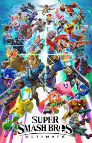

Super smash bros. ultimate (2018)
Super Smash Bros. is een game serie van nintendo. De nieuwste game in de serie - Super Smash Bros. Ultimate - is door 12 miljoen mensen gespeelt.
De game is een platform-vechtspel, wat inhoud dat de game vooral gaat over vechten en bewegen. Super Smash Bros. voor de nintendo 64 (1995) was de eerste van zijn soort. Sindsdien zijn er ook andere platvorm vechtspellen zoals Rivals of eather en Slap city. Al worden deze games veel gespeelt, de Super Smash Bros. serie is nogsteeds de populairste by lange na.